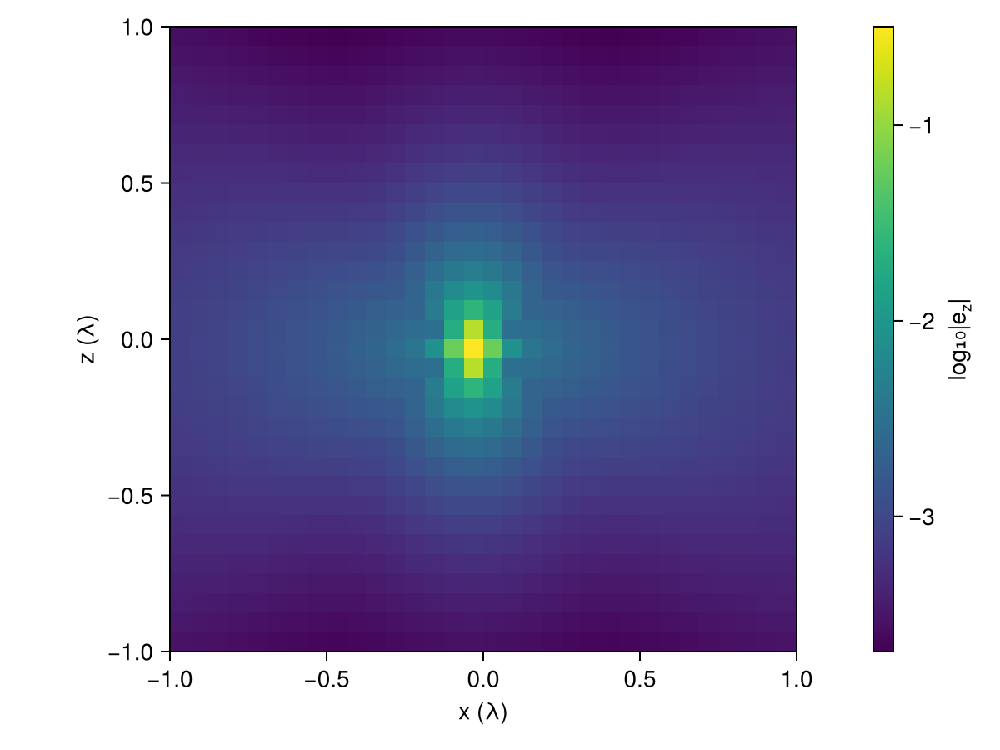
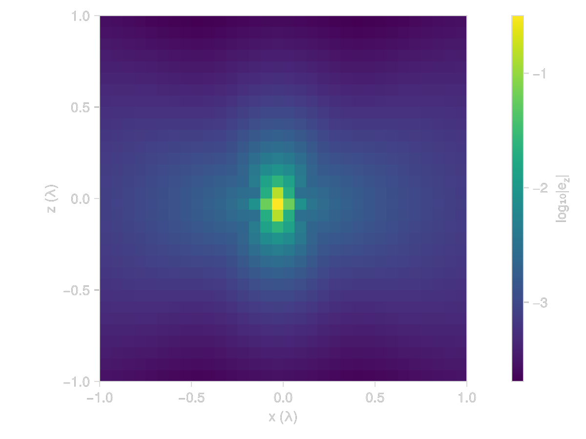
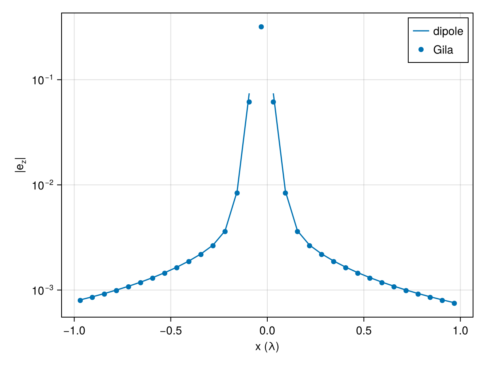
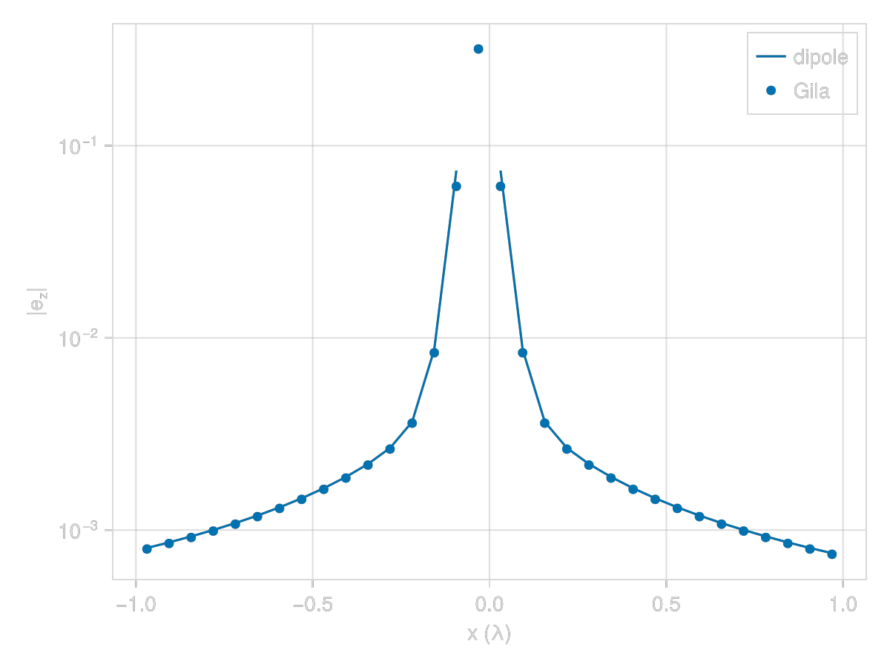
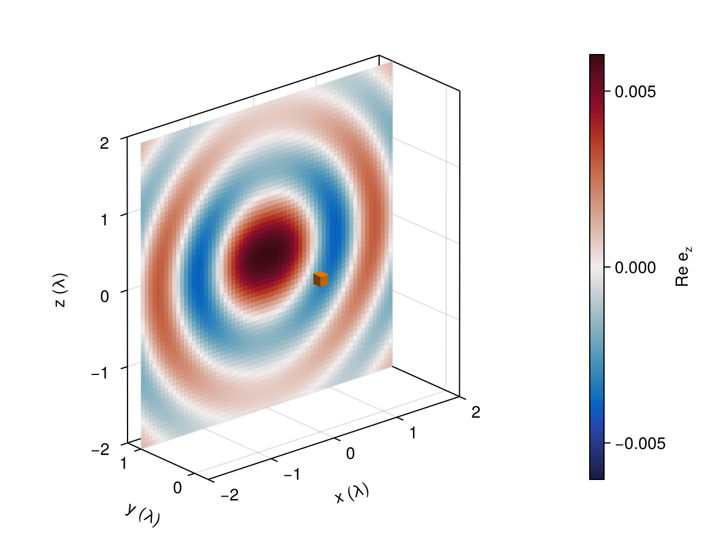
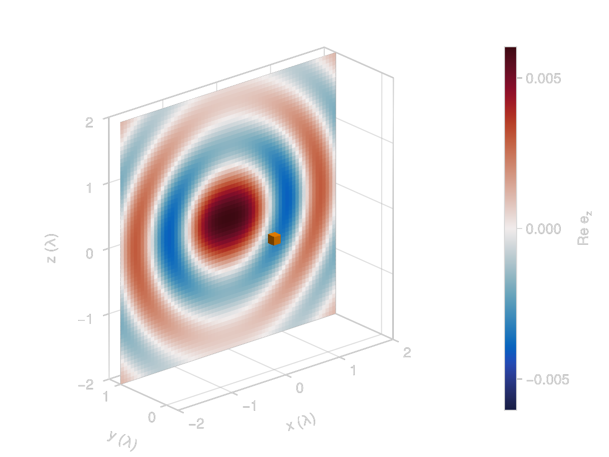

The Vacuum Green Operator
The vacuum Green operator $\mathsf{G}_\circ$ takes a current and returns the field it radiates, and the rest of Gila is built on top of it. Here we apply it to the simplest current we can make, a single radiating cell, and compare what comes out with the textbook dipole field.
using GilaElectromagnetics, CairoMakieA Single Dipole
VacuumGreenOperator(volume) builds the operator from a volume to itself. The build computes the matrix elements once and stores their Fourier transform, so it is the slow step, and applying the operator afterwards only costs a few FFTs.
volume = GlaVol((32, 32, 32), (1//16, 1//16, 1//16))
G₀ = VacuumGreenOperator(volume)GlaOprVac{Float32} — G₀, self, CPU
volume 32×32×32 cells of 1//16 λ → 2//1 × 2//1 × 2//1 λ³ at (0, 0, 0)
kernel full, frequency 1.0 + 0.0im
storage 98304 dof, egoFur 1.8 MiBOur current is a single cell polarized along $z$. Gila only allows an even number of cells along each axis (convention 5.1) and the box is centered on the origin, so no cell sits exactly there. We take cell (16, 16, 16), the one just below the origin along all three axes. regionview(p, 1) reshapes the field of the first (and here only) volume into a (cells..., 3) array without copying, and the last index picks the component.
i_src = 16 # source cell index along each axis
z_comp = 3 # z component
p = zeros(volume)
regionview(p, 1)[i_src, i_src, i_src, z_comp] = 1
e = G₀ * p;Below is $\abs{e_z}$ in the $xz$ plane through the source. Close in, the $1/R^3$ near field dominates, and further out the field along $z$ falls off faster than along $x$, since a dipole does not radiate along its own axis. The cell centers along each axis are in volume.grd (stored as rationals).
x = Float64.(volume.grd[1])
z = Float64.(volume.grd[3])
e_cells = regionview(e, 1)
fig = Figure()
ax = Axis(fig[1, 1]; xlabel = "x (λ)", ylabel = "z (λ)", aspect = DataAspect())
hm = heatmap!(ax, x, z, log10.(abs.(e_cells[:, i_src, :, z_comp])))
Colorbar(fig[1, 2], hm; label = rich("log₁₀|e", subscript("z"), "|"))
fig

Comparison With the Dipole Field
To compare $e$ with the textbook we need Gila's units. Lengths are measured in wavelengths, so $k_\circ = 2π$, and fields are stored divided by $Z_\circ$ (convention 4.3). Away from the source the kernel is $(k_\circ^2 + \nabla\nabla)\, e^{ik_\circ R}/4πR$ (eq. 4.6), and our cell carries a dipole moment of $p\,ΔV$. Along the $x$ axis, broadside to the dipole, that gives
\[e_z(R) = ΔV \frac{e^{ik_\circ R}}{4πR}\ab(k_\circ^2 + \frac{ik_\circ}{R} - \frac{1}{R^2}).\]
k₀ = 2π
ΔV = prod(volume.scl) # volume.scl holds the cell side lengths
R = abs.(x .- x[i_src])
e_dipole = @. ΔV * cis(k₀ * R) / (4π * R) * (k₀^2 + im * k₀ / R - 1 / R^2)
e_z = e_cells[:, i_src, i_src, z_comp]
fig = Figure()
ax = Axis(fig[1, 1]; xlabel = "x (λ)", ylabel = rich("|e", subscript("z"), "|"), yscale = log10)
lines!(ax, x, abs.(e_dipole); label = "dipole")
scatter!(ax, x, abs.(e_z); label = "Gila")
axislegend(ax)
fig

The two curves agree everywhere except in the cells right next to the source, where the size of the cube matters. From half a wavelength out the ratio between them settles to a constant.
far = R .>= 1/2
round.(e_z[far] ./ e_dipole[far]; digits = 4)17-element Vector{ComplexF64}:
0.9872 - 0.0im
0.9872 - 0.0im
0.9872 - 0.0im
0.9872 - 0.0im
0.9872 - 0.0im
0.9872 - 0.0im
0.9872 + 0.0im
0.9872 - 0.0im
0.9872 + 0.0im
0.9872 + 0.0im
0.9872 + 0.0im
0.9872 - 0.0im
0.9872 - 0.0im
0.9872 - 0.0im
0.9872 - 0.0im
0.9872 - 0.0im
0.9872 - 0.0imThe missing 1.3% comes from the voxel average. Gila's entries are cell averages (section 3.2), and far from the source the wave is locally a plane wave $e^{ik_\circ x}$. Averaging it over a cell of side $Δ$ multiplies it by $\operatorname{sinc}(Δ)$ (Julia's normalized sinc, since $k_\circ = 2π$), and the source cell and the target cell each contribute one such factor, which gives
sinc(1 / 16)^20.9872148307666583Separate Source and Target Volumes
We don't need a box that spans both the source and the region we look at to see the field far away. VacuumGreenOperator(target, source) maps a current on one volume to the field on another, and its cost depends on the size of the two volumes but not on the distance between them. We put the source in a single block of $2^3$ cells and look at the field on a $4λ \times 4λ$ sheet one wavelength away along $y$.
source = GlaVol((2, 2, 2), (1//16, 1//16, 1//16))
target = GlaVol((64, 2, 64), (1//16, 1//16, 1//16), (0//1, 1//1, 0//1))
G_target_source = VacuumGreenOperator(target, source)
p_source = discretize!(zeros(source), r -> (0, 0, 1))
e_sheet = G_target_source * p_source;We plot the real part of $e_z$ on the sheet, along with the source (the small orange block at the origin). The wavefronts are rings around the point of the sheet closest to the source, and they fade along $z$ (the dipole axis). The distance to the source changes slowly near the center of the sheet, so the rings there are more than a wavelength apart, and they only get close to one wavelength toward the edges.
x_sheet = Float64.(target.grd[1])
z_sheet = Float64.(target.grd[3])
e_z_sheet = real(regionview(e_sheet, 1)[:, 1, :, z_comp])
source_corner = Float64.(first.(source.grd) .- source.scl .// 2)
fig = Figure()
ax = Axis3(fig[1, 1]; aspect = :data, xlabel = "x (λ)", ylabel = "y (λ)", zlabel = "z (λ)", yticks = [0, 1])
hm = heatmap!(ax, x_sheet, z_sheet, e_z_sheet; colormap = :balance, colorrange = (-1, 1) .* maximum(abs, e_z_sheet),
transformation = (:xz, 1.0)) # the sheet sits at y = 1
mesh!(ax, Rect3f(source_corner, Float64.(source.cel .* source.scl)); color = :darkorange)
limits!(ax, -2, 2, -0.25, 1.25, -2, 2)
Colorbar(fig[1, 2], hm; label = rich("Re e", subscript("z")))
fig

This page was generated using Literate.jl.